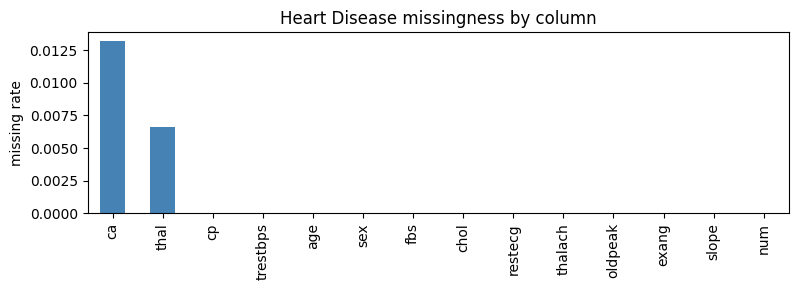

Missingness handling
SemSynth provides utilities for learning realistic missingness patterns from real datasets and applying them to synthetic samples. The design pairs per-column logistic models with a dataframe-level wrapper so generators can emit data that mirrors conditional dropout rates observed in the source data. The chart below highlights which Heart Disease variables drop out most often before we fit the wrapper.
# Plot observed missingness to see which columns drive the model.
import pandas as pd
import matplotlib.pyplot as plt
heart = pd.read_csv("../downloads-cache/uciml/45.csv.gz")
na_rates = heart.isna().mean().sort_values(ascending=False)
ax = na_rates.plot.bar(figsize=(8, 3), color="steelblue")
ax.set_ylabel("missing rate")
ax.set_title("Heart Disease missingness by column")
plt.tight_layout()

Column-level modeling
ColumnMissingnessModelestimates the probability that a specific column is missing by fitting a logistic regression on one-hot encoded features of all other columns. It tracks the marginal missingness rate and skips modeling when a column is always present or always absent, ensuring stable behavior on edge cases.The model samples boolean masks by scaling predicted probabilities back to the observed missingness rate when needed, preventing over- or under-estimation of missing cells during synthesis.
Dataframe-level application
DataFrameMissingnessModelfits aColumnMissingnessModelfor each column in the real dataset and stores them in a mapping. When applied to a synthetic dataframe, it iterates over the learned masks to injectNaNvalues column by column, respecting the fitted conditional patterns.MissingnessWrappedGeneratorwraps any base generator callable and first fits missingness on the real data. Subsequent calls to.sample(n)produce synthetic rows with the learned missingness applied, enabling drop-in realism without modifying the underlying generator implementation.
# Fit and apply the wrapper to a small sample.
from semsynth.missingness import DataFrameMissingnessModel
model = DataFrameMissingnessModel(random_state=7).fit(heart)
sampled = model.apply(heart.head(20).copy())
sampled.isna().mean()
/Users/benno/Documents/ud/projects/generative-metadata/semsynth/.venv/lib/python3.11/site-packages/sklearn/linear_model/_logistic.py:406: ConvergenceWarning: lbfgs failed to converge after 200 iteration(s) (status=1):
STOP: TOTAL NO. OF ITERATIONS REACHED LIMIT
Increase the number of iterations to improve the convergence (max_iter=200).
You might also want to scale the data as shown in:
https://scikit-learn.org/stable/modules/preprocessing.html
Please also refer to the documentation for alternative solver options:
https://scikit-learn.org/stable/modules/linear_model.html#logistic-regression
n_iter_i = _check_optimize_result(
/Users/benno/Documents/ud/projects/generative-metadata/semsynth/.venv/lib/python3.11/site-packages/sklearn/linear_model/_logistic.py:406: ConvergenceWarning: lbfgs failed to converge after 200 iteration(s) (status=1):
STOP: TOTAL NO. OF ITERATIONS REACHED LIMIT
Increase the number of iterations to improve the convergence (max_iter=200).
You might also want to scale the data as shown in:
https://scikit-learn.org/stable/modules/preprocessing.html
Please also refer to the documentation for alternative solver options:
https://scikit-learn.org/stable/modules/linear_model.html#logistic-regression
n_iter_i = _check_optimize_result(
age 0.00
sex 0.00
cp 0.00
trestbps 0.00
chol 0.00
fbs 0.00
restecg 0.00
thalach 0.00
exang 0.00
oldpeak 0.00
slope 0.00
ca 0.00
thal 0.05
num 0.00
dtype: float64
References
Logistic regression missingness modeling with scikit-learn: https://scikit-learn.org/stable/modules/linear_model.html#logistic-regression
One-hot encoding for categorical features: https://scikit-learn.org/stable/modules/generated/sklearn.preprocessing.OneHotEncoder.html